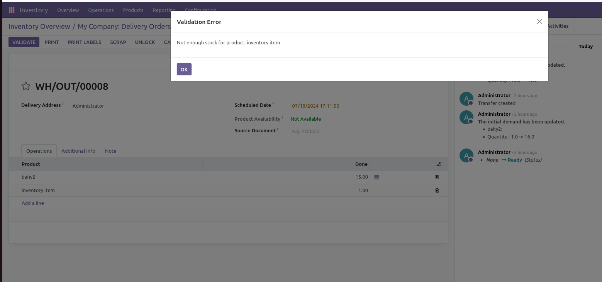
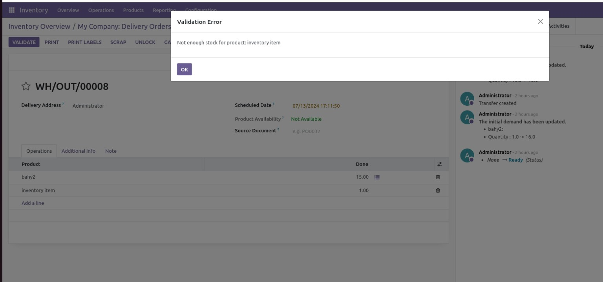

This module prevents stock moves from being confirmed if there is not enough stock available. Features Checks stock availability before confirming stock moves Prevents negative stock levels Displays a warning message if stock is insufficient this is overview video https://youtu.be/CjhoT7DOsA8 don't hesitate to contact for additional service contact whatsapp +2 01222945469 Bahyeldin Abdelhady

